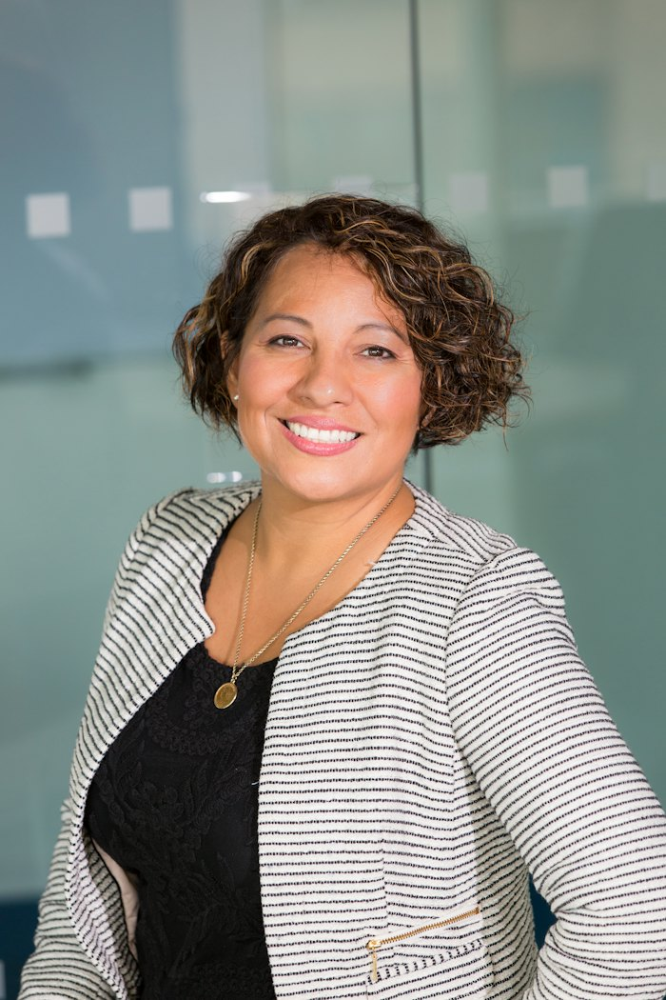

Everyday rights — explained simply
Pick the area that's relevant to you today. Each tab has the basics, the documents you'll need, and the office to approach.
Land & property
Every citizen has the right to clear title, accurate records, and transparent transactions in land and property. The Ente Bhoomi portal in Kerala is a recent example of what good land governance looks like in practice.
- Your name on the land record should match your ID; mismatches can be corrected through the village office.
- Every transaction (sale, mortgage, partition) creates a mutation entry — ask for it in writing.
- Encumbrance certificates show whether the land has been pledged or has outstanding liabilities.
Get a record of rights
Visit the village office or use the state's online land records portal (e.g., Ente Bhoomi in Kerala).
Check encumbrances
Ask for an encumbrance certificate before buying — it lists past loans and liens.
Correct an error
Apply for mutation correction at the village office. Bring supporting documents and acknowledgement receipts.
Certificates
Income, residence, caste, community, birth, death and disability certificates are foundational documents — and the law specifies clear timelines for issuing them.
- Every certificate request must be acknowledged in writing — keep your receipt.
- Most certificates have a maximum issue time defined in the state's Citizen Charter — ask for it.
- If a request is denied, you are entitled to a written reason — not silence.
Income certificate
Usually issued within 7–14 days; supports scholarships, fee waivers and welfare access.
Residence certificate
Confirms your address with the state; required for school admissions and many welfare schemes.
Birth / death certificate
Apply within 21 days of the event for routine processing; late registration is allowed but takes longer.
Health services
You are entitled to dignified care at public health facilities — including timely OPD, free essential medicines, and emergency stabilisation regardless of ability to pay.
- Every public hospital should publish its list of free essential medicines.
- Emergency care is a right — no facility can deny stabilisation for inability to pay.
- You have a right to your own medical records (and increasingly, a portable digital record).
Emergency care
Right to stabilisation in any hospital, public or private, without upfront payment.
Free essential medicines
Look for the published list at the OPD counter. Ask for substitutes if a listed medicine is out of stock.
Your medical records
Right to a copy of your records. In Kerala, eHealth makes them portable across public facilities.
Welfare & pensions
Old-age, widow, disability, and other social-security pensions are statutory entitlements when you meet eligibility criteria — not favours.
- Application must be acknowledged in writing; processing timelines are published.
- Rejection must come with a reason and an appeal route — not a long silence.
- Disbursement dates and amounts are published; mismatches are appealable.
Old-age pension
Apply through your panchayat or municipality; eligibility usually pegged to age and income.
Widow / disability pension
Separate statutory schemes with defined eligibility — ask for the form and acknowledge receipt.
Track your application
Most states publish status online or via the panchayat office. Demand updates if there is silence.
What does "good service" actually mean?
Good service is not a slogan. It is a set of testable promises — timelines, behaviour, and remedies — that the state publishes and the citizen can hold it to.
Look for Citizen Charters at every government office. If one is missing, that itself is a problem worth raising.
- Promised timeline: how long will this service take?
- Required documents: what exactly do you need to bring?
- Fees and exemptions: what does it cost, and who is exempt?
- Escalation path: if the timeline slips, who do you approach next?

The most powerful office near you is the ward sabha
Local self-governance is where decisions about your road, school, anganwadi and drainage actually get made. Show up.
Attend ward sabhas
Most panchayats hold ward sabhas at least twice a year. Dates are public — your name is on the voter list, so your seat is reserved.
Submit a proposal
You can submit written suggestions to the LSGI. A proposal with cost estimates and beneficiary lists travels further than a complaint.
Volunteer
Many panchayats welcome volunteers for surveys, audits, school support and disaster drills. Ask the secretary how to register.
Step-by-step: raise a grievance and get it closed.
Most grievances are resolved at the lowest level when they are raised cleanly. A short, factual complaint with documents attached and a tracking number on file goes faster than the most strongly worded one.
The Oppam model — pioneered in Kerala — is one example of how a district office can close 90%+ of grievances within 96 hours when the process is right.
- Step 1 — Write a one-paragraph factual complaint. Include date, location and what you are asking for.
- Step 2 — Submit it (in person / WhatsApp / written / helpline) and get an acknowledgement / tracking ID.
- Step 3 — Ask for the name of the assigned officer and the expected timeline.
- Step 4 — If timelines slip, escalate to the next level (Tahsildar → Sub-Collector → Collector → State).

How does it actually work?
Send us your question. We'll point you in the right direction.
Surajyapatham is not a government office — but we can help you find the right one, and write your message in a way that gets a faster reply.